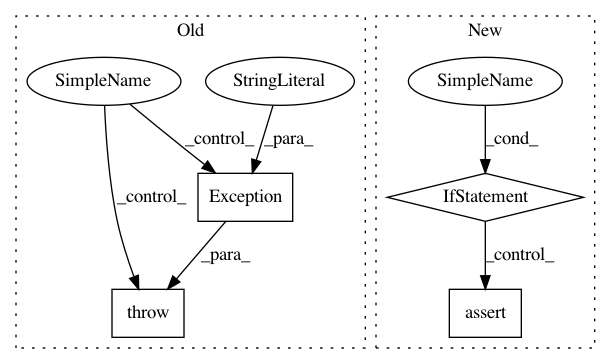

44d558ad7f13251650f40475eef6652df59e4b09,keras/layers/containers.py,Graph,set_previous,#Graph#Any#Any#,254
Before Change
self.inputs[self.input_order[0]].set_previous(layer)
else:
if not connection_map:
raise Exception("Cannot attach multi-input layer: "
"no connection_map provided.")
for k, v in connection_map.items():
if k in self.inputs and v in layer.outputs:
self.inputs[k].set_previous(layer.outputs[v])
else:
After Change
self.set_input()
return self.layers[0].get_input(train)
@property
def input_shape(self):
return self.layers[0].input_shape
@property
def input(self):
return self.get_input()
def get_weights(self):
weights = []
for layer in self.layers:
weights += layer.get_weights()
return weights
def set_weights(self, weights):
for i in range(len(self.layers)):
nb_param = len(self.layers[i].trainable_weights) + len(self.layers[i].non_trainable_weights)
self.layers[i].set_weights(weights[:nb_param])
weights = weights[nb_param:]
In pattern: SUPERPATTERN
Frequency: 3
Non-data size: 4
Instances
Project Name: keras-team/keras
Commit Name: 44d558ad7f13251650f40475eef6652df59e4b09
Time: 2016-02-22
Author: Nicholas.Eggert@target.com
File Name: keras/layers/containers.py
Class Name: Graph
Method Name: set_previous
Project Name: OpenNMT/OpenNMT-py
Commit Name: d771f2f86276391fc4babdf5783fe509084340e9
Time: 2017-09-13
Author: nasa4836@gmail.com
File Name: opts.py
Class Name:
Method Name: check_sru_requirement
Project Name: keras-team/keras
Commit Name: c60e2dfbdbb49b383b159fba7f46810c7dcbbf34
Time: 2015-10-05
Author: makoto.matsuyama@gmx.com
File Name: keras/layers/core.py
Class Name: Layer
Method Name: set_previous